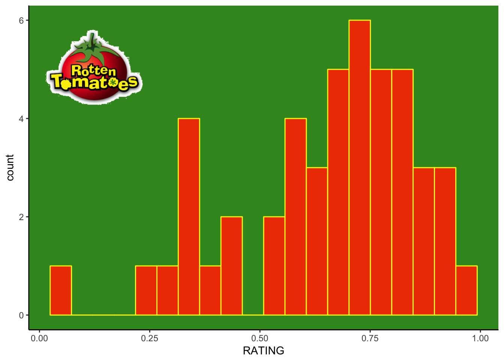
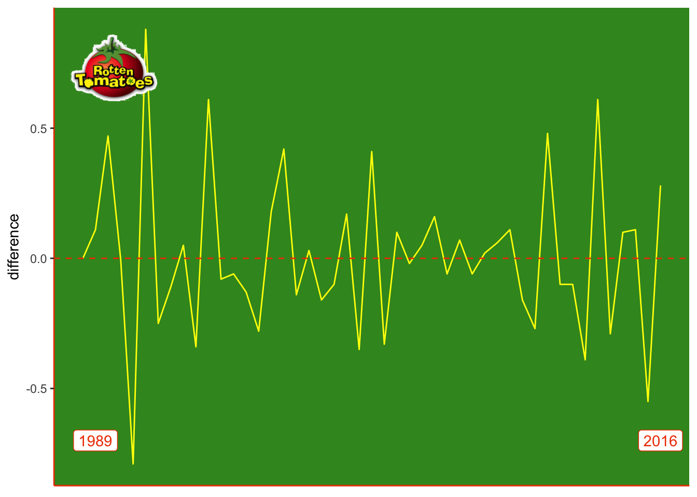
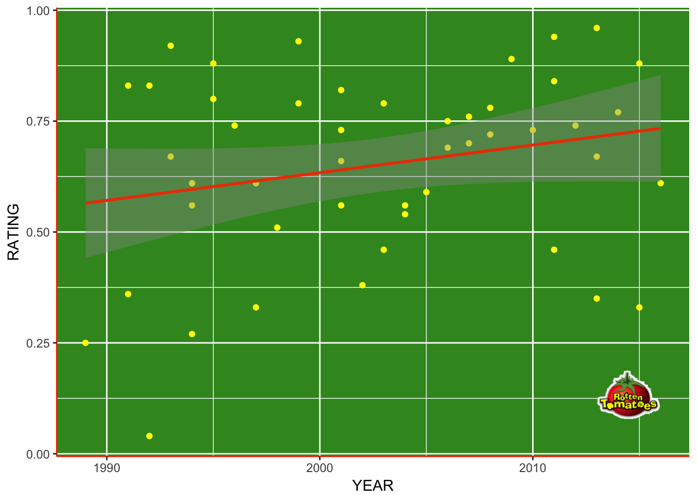
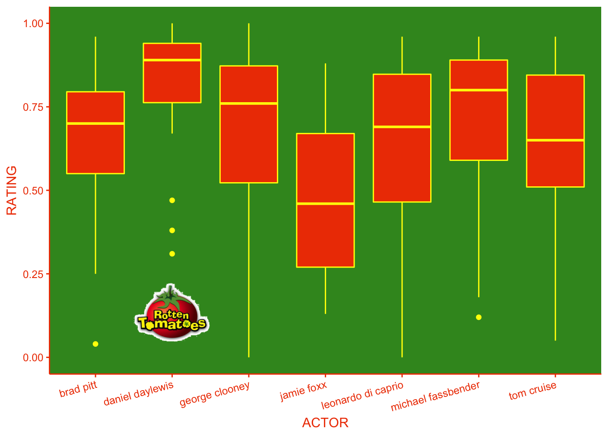

So I saw this blog post, in which Pretty Famous ranked every one of Brad Pitt’s movies (I have no idea how I came across it, I’m not particularly a movie buff or a fan of Señor Pitt, but anyway). Then I wondered how easy/hard it would be to do something like that in R. Pretty Famous used a few sources, but here I’m going to stick to Rotten Tomatoes, since it’s a pretty well-known movie ratings site, maybe the most well-known. Pretty famous, you could say (ugh, apologies).
For those who don’t have much experience scraping information from the web, we first need to find the unique url for Brad Pitt. In other words, his “personal page” on Rotten Tomatoes. Once we’ve done that, we need to identify what part of the page we want to scrape. In this case, that is the “Movies” table. You can right-click on this table and click “Inspect” or “Inspect Element” on your browser (I’m using Chrome on a macbook, but it should be pretty similar on other browsers). Once you find the actual table, instead of a <div> element holding it, or just a title, then copy the selector of that element. This can be done on Chrome by right clicking the line in the ‘Elements’ panel that comes up when you right-click and click ‘Inspect’. You will have an option to ‘Copy’, then choose ‘Copy selector’ (you can choose xpath if you want, but css is simpler). In any case, the elements will be highlighted on the page as you click on them.
In R, we can use the rvest package to read the page, store the nodes of the web document that we want and then extract the table from this node set. The ‘table’ ends up as a list of two dataframes, Brad Pitt’s films and TV appearances. His movies are in the first dataframe and so we extract that one out, as a dataframe called ‘movies’. Of course, in some of these movies he had a larger role than others, and can be said to have had a bigger impact on the rating score. But, hey, this is informal analysis.
library(tidyverse)
library(rvest)
library(lubridate)
url <- "https://www.rottentomatoes.com/celebrity/brad_pitt/"
page <- read_html(url)
tb_x <- html_nodes(page, css = "#filmographyTbl")
tb <- html_table(tb_x)
movies <- tb[[1]]
head(movies)## RATING TITLE
## 1 No Score Yet World War Z 2
## 2 87% The Lost City of Z
## 3 No Score Yet Brad's Status
## 4 61% Allied
## 5 98% Moonlight
## 6 92% Voyage of Time: The IMAX Experience
## CREDIT
## 1 Gerry Lane\n \n \n Producer
## 2 Executive Producer
## 3 Actor
## 4 Max Vatan
## 5 Executive Producer
## 6 Producer
## YEAR
## 1 2017
## 2 2017
## 3 2017
## 4 2016
## 5 2016
## 6 2016Now we’ve got Mr. Pitt’s movies in a dataframe, with their rating, title, producer credits and year. Since anything with “No Score Yet” is not of particular use to us, let’s remove it. We also could do with changing “87%” to an actual number, i.e. 0.87, and we’ll take out the movies in which he had no acting role, and try to clean up all those spaces and new lines.
'%ni%' <- Negate('%in%')
movies <- movies %>%
mutate(CREDIT = gsub("\\r\\n", "", CREDIT)) %>%
filter(RATING != "No Score Yet",
CREDIT %ni% c("Producer", "Executive Producer"),
TITLE %ni% c("Selma", "The Time Traveler's Wife")) %>%
mutate(RATING = gsub("%", "", RATING),
RATING = as.numeric(RATING),
RATING = RATING/100)So how do the ratings for his Pittness stack up? Let’s have a look-see, Rotten Tomatoes style:
library(grid)
library(png)
tomato <- readPNG("rmd_images/tomato.png")
g <- rasterGrob(tomato, interpolate=TRUE)
ggplot(movies, aes(x = RATING)) +
geom_histogram(bins = 20, fill = "#EE4000", colour = "yellow") +
theme_classic() +
theme(panel.background = element_rect(fill = "#3A9425")) +
annotation_custom(g, xmin = 0, xmax = 0.25, ymin = 4, ymax = 6)
(You can get the tomato image from here. Convert it to png and strip out (most of) the white background using ImageMagick – the command on a mac is convert rotten_tomatoes.jpg -transparent white tomato.png.)
Not so bad! Got some not-so-greats, but quite a lot of highly rated movies. I’m surprised, actually. In fact the mean and median values are:
mean(movies$RATING)## [1] 0.6508511median(movies$RATING)## [1] 0.7I wonder if his movies have gotten better? I was always under the impression that Brad Pitt was an actor who, like Leonardo DiCaprio, actually learned to act over time, instead of already being a talented actor when he started. Fair credit to them, though, they could have just rested on their laurels after they first became famous.
Let’s have a look at how the ratings have change over time and see if Brad has gotten better or worse, judging by the film that came before.
movies <- movies %>%
arrange(YEAR) %>%
mutate(difference = c(0, diff(RATING, lag = 1)),
date_counter = 1:nrow(.))
ggplot(movies, aes(x = date_counter, y = difference)) +
geom_line(colour = "yellow") +
theme_classic() +
theme(axis.text.x = element_blank(),
axis.ticks.x = element_blank(),
axis.title.x = element_blank(),
panel.background = element_rect(fill = "#3A9425"),
axis.line = element_line(colour = "#EE4000")) +
annotate("label", label = "1989", x = 2, y = -0.7, colour = "#EE4000") +
annotate("label", label = "2016", x = 47, y = -0.7, colour = "#EE4000") +
geom_hline(yintercept = 0, linetype = 2, colour = "#EE4000") +
annotation_custom(g, xmin=0, xmax=7, ymin=0.5, ymax=0.95)
Hmm, he’s had a fairly erratic career in terms of movie ratings. Looking at the relationship between ratings and time, there’s a bit of an improvement, and certainly less train-wrecks, but the improvement is not massive. Maybe he didn’t start off so bad, after all.
ggplot(movies, aes(x = YEAR, y = RATING)) +
geom_point(colour = "yellow") +
geom_smooth(method = "lm", colour = "#EE4000") +
theme(panel.background = element_rect(fill = "#3A9425"),
axis.line = element_line(colour = "#EE4000")) +
annotation_custom(g, xmin=2013, xmax=2016, ymin=0.01, ymax=0.25)
So what was Mr. Pitt’s worst film?
movies %>% arrange(RATING) %>% head(n = 1)## RATING TITLE CREDIT YEAR difference date_counter
## 1 0.04 Cool World Det. Frank Harris 1992 -0.79 5Wow! 0.04!! I have never seen ‘Cool World’, but it can’t be that bad…can it?

Hmm, maybe it can…
And his best?
movies %>% arrange(desc(RATING)) %>% select(RATING, TITLE) %>% head(n = 1)## RATING TITLE
## 1 0.96 12 Years a Slave12 Years a Slave. Well, that was a fine movie, and I thought Fassbender was fantastic, as usual. Which makes me think about how Brad Pitt compares to other actors of his generation. Fassbender might be a comparative late starter, but let’s see how he and some others (George Clooney, Leonardo DiCaprio, Daniel Day-Lewis, Jamie Foxx and Tom Cruise) compare to Brad Pitt in terms of ratings (earnings might be another interesting comparison). We can use the work we did earlier as an outline for a function to do the same as we did for Bradley for all these male actors, adding a column with a name of the actor.
library(reshape)
actors <- c("george_clooney", "leonardo_di_caprio", "daniel_daylewis",
"jamie_foxx", "tom_cruise", "michael_fassbender")
base_url <- "https://www.rottentomatoes.com/celebrity/"
movie_list <- list()
for(actor in actors){
url <- paste0(base_url, actor, "/")
page <- read_html(url)
tb_x <- html_nodes(page, css = "#filmographyTbl")
tb <- html_table(tb_x)
movie <- tb[[1]]
movie_list[[actor]] <- movie
movie_list[[actor]]$ACTOR <- actor
names(movie_list[actor]) <- actor
}
all_actors <- merge_all(movie_list)
all_actors <- all_actors %>%
mutate(CREDIT = gsub("\\r\\n", "", CREDIT)) %>%
filter(RATING != "No Score Yet",
CREDIT %ni% c("Producer", "Executive Producer",
"Director Producer")) %>%
mutate(RATING = gsub("%", "", RATING),
RATING = as.numeric(RATING),
RATING = RATING/100,
ACTOR = gsub("_", " ", ACTOR))
movies <- movies %>%
mutate(ACTOR = "brad pitt")
all_actors <- full_join(all_actors, movies) %>%
select(-c(difference, date_counter))So, now that we’ve done all that, let’s have a look at how these chaps compare!
ggplot(all_actors, aes(y = RATING, x = ACTOR)) +
geom_boxplot(fill = "#EE4000", colour = "yellow") +
theme(panel.background = element_rect(fill = "#3A9425"),
panel.grid.major = element_blank(),
panel.grid.minor = element_blank(),
axis.line = element_line(colour = "#EE4000"),
axis.text.x = element_text(angle = 15, hjust = 1,
colour = "#EE4000"),
axis.text.y = element_text(colour = "#EE4000"),
axis.ticks = element_line(colour = "#EE4000"),
axis.title = element_text(colour = "#EE4000")) +
annotation_custom(g, xmin=1.5, xmax=2.5, ymin=0.01, ymax=0.25)
Not surprisingly, the three-time Best Actor Oscar winner Daniel Day-Lewis has a notably different profile. He doesn’t make many bad movies, that’s for sure (there’s nothing under the tomato image). Poor Jamie Foxx, on the other hand, has made quite a few more stinkers. Perhaps opportunities were harder to come by for the only black actor in the group, perhaps not.
So after all that, what do we think of Meister Pitt? He compares very favourably to some of his peers, with maybe only Fassbender and Day-Lewis on a different level. Still, though, not bad, Mr. Pitt. Even after Mr. and Mrs. Smith :wink:

{kind=link}
Share this post
Twitter
Google+
Facebook
Reddit
LinkedIn
StumbleUpon
Email